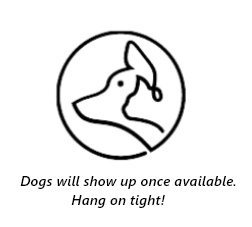

<!--Header-->
<ion-header>
    <ion-toolbar color="secondary">
        <ion-buttons slot="start">
            <ion-button fill="clear" color="dark" (click)="preferences()">
                <ion-icon slot="icon-only" name="settings"></ion-icon>
            </ion-button>
        </ion-buttons>
        <ion-title class="ion-text-center">
            
        </ion-title>
        <ion-buttons slot="end">
            <ion-button fill="clear" color="dark" (click)="profile()">
                <ion-icon slot="icon-only" name="person"></ion-icon>
            </ion-button>
        </ion-buttons>
    </ion-toolbar>
</ion-header>

&nbsp;

<ion-content>
    <ion-label class="hint">
        <ion-icon name="information-circle-outline"></ion-icon>&nbsp;Slide left to dislike or right to like a dog or make use of the buttons below.</ion-label>
    <sw-card-wrapper #cardWrapper>
        <div class="card" *ngFor="let avatar of avatars, let index = index" [class.visible]="avatar.visible" [class.hidden]="!avatar.visible" swSwipeable [width]="350" [height]="500" [orientation]="'x'" (swiped)="swiped($event, index)">
            
            <h2><b>{{avatar.name}}, {{avatar.age}} </b>
                <div class="ion-float-right"><b>{{avatar.organisation}}<ion-icon class="verified" name="checkmark-circle" color="twitter"></ion-icon></b></div>
            </h2>
        </div>
    </sw-card-wrapper>

    <!--Shows results page and underlying cards-->
    <div class="card_bg_box">
        <ion-thumbnail class="avatar">
            
        </ion-thumbnail>
        <div class="card_bg_1">
        </div>

    </div>

    <div class="button_box">
        <ion-button id="refresh-button" (click)="retry()" class="redo_button" mode="ios" shape="round" fill="outline">
            <ion-icon color="warning" name="arrow-undo"></ion-icon>
        </ion-button>
        <div class="space"></div>
        <ion-button id="dislike-button" (click)="swipeleft()" mode="ios" class="cancel_button" shape="round" fill="outline">
            <ion-icon color="danger" name="close"></ion-icon>
        </ion-button>
        <div class="space"></div>
        <ion-button id="like-button" (click)="swiperight()" mode="ios" class="like_button" shape="round" fill="outline">
            <ion-icon color="success" name="paw"></ion-icon>
        </ion-button>
        <div class="space"></div>
        <ion-button id="location-button" class="location_button" mode="ios" shape="round" fill="outline">
            <ion-icon color="tertiary" name="location-sharp"></ion-icon>
        </ion-button>
    </div>


</ion-content>

<!-- Footer-->
<ion-tab-bar color="secondary" slot="bottom">
    <ion-tab-button tab="home" (click)="home()">
        <ion-icon color="dark" name="home"></ion-icon>
    </ion-tab-button>
    <ion-tab-button tab="liked" (click)="likeddogs()">
        <ion-icon color="dark" name="paw"></ion-icon>
    </ion-tab-button>
    <ion-tab-button tab="chats" (click)="gotoChat()">
        <ion-icon color="dark" name="chatbox"></ion-icon>
    </ion-tab-button>
</ion-tab-bar>